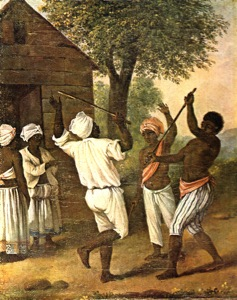
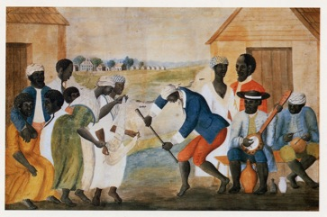
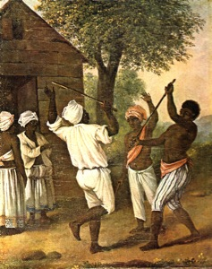
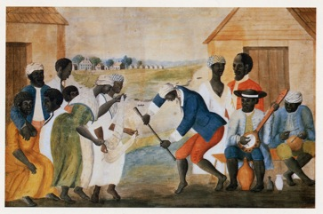

Image 1: “A cudgelling match between English and French Negroes in the island of Dominica.” National Library of Jamaica, Institute of Jamaica, Kingston. Handler and Tuite, The Atlantic Slave Trade and African Life in the Americas: A Visual Record (http://hitchcock.itc.virginia.edu/Slavery/index.php)
Image 2: Possibly Lowcountry (South Carolina).
Abby Aldrich Rockefeller Folk Art Museum, Colonial Williamsburg, Virginia. Handler and Tuite, The Atlantic Slave Trade and African Life in the Americas: A Visual Record (http://hitchcock.itc.virginia.edu/Slavery/index.php)
![The African Diaspora as a field of study is only a few decades old but an understanding among Africans and their descendants of being part of a global web of people de varias colores dates as far back as the fifteenth century, if not further. The transatlantic slave trade was not the first migration of people of African descent, or even the first forced migration. Not all Africans have not necessarily always been “African.” Not all of the diaspora has necessarily been “black.” As a field, African Diaspora study interrogates the scope, trials and triumphs of Africana life so as to better understand trials and triumphs not only of Africans and their descendants worldwide but of all people and all societies around the world. The geographic scope is global, from the African continent, to the Americas, to Europe, to Asia, to Australia. The temporal scope ranges from the migration of the first humans from the African continent north 100,000 years ago to African American agitation to resolve the conflict in Darfur that continues today. And the overarching importance remains the transnational linkages, struggles, and identity of people of African descent. As Darlene Clark Hine and Jacqueline McLeod notes in their crucial volume, African Diaspora is a “paradigm of empowerment.” The African Diaspora has made and continues to make fundamental contributions to the world as we know it today. Scholars all around the world are engaged in this field because they are determined that those contributions are made incontrovertibly clear.
Methodology, that is, how to best articulate the history of the Africa and her global descendants, is as much a battle-ground in the field of African Diaspora history as the study of the American Presidents is in United States history--in fact, even more so. Correspondingly, methodologies range from the complicated recovery processes engaged in by scholars like George Reid Andrews who brought mainstream attention to the Afro-Argentine population--and corresponding “whitening” process--of the nineteenth century, to the “Afro-centric” centering of Africa in diaspora study by scholars like Paul Lovejoy, to the equally complicated discerning processes engaged in by scholars like J. Lorand Matory who complicated scholarly understanding of Brazilian Candomble and Yoruba history and culture with a look at the linkages between urban elites in Bahia, Brazil, Lagos, Nigeria, and the United States. A testament to the importance of this field, African Diaspora history is old enough to encompass a wide swatch of methods, subjects, topics and tools. However, it is young enough to lack some of the organized self-definition of fields like United States history and European history (which are ancient in comparison). Below is an attempt to provide the seriously interested student some order as they consider African Diaspora historical study and research.](Methodology_files/shapeimage_2.png)
![It is a common misconception that the field, African Diaspora, is primarily concerned with slavery, or the transatlantic slave trade, or even black life in any particular colony or country of the Americas. As aforementioned, the African Diaspora can mean researching the ancient world as much as it can mean diving into contemporary case study. It is also inherently transnational--that is, concerned with black life as it crosses, considers, and manipulates the bounds of the nation-state, as it negotiates relationships with Africa, within Africa and across black populations not on the continent. Therefore, the first task for any student beginning research in the history of the African Diaspora is to define the field.
What is a Diaspora?
Kim Butler describes four basic characteristics that are common to all diasporas:
Migrants have two or more destinations, “creating, instead of a bipolarity, the scattering implicit in the very term diaspora”
A relationship to the homeland that continues after dispersal
A “collective common identity” within and among the dispersed
The dispersal is long-term--over at least two generations
Scholars have argued that other components are important, including an element of force in the nature of the dispersal, but Butler’s synthesis of the existing scholarship on diaspora is extremely helpful. It is also a definition that can be, and is, applied to other diasporas--the biblical Jewish diaspora, the Irish diaspora, the Chinese/East Indian diaspora of the second half of the nineteenth century.
What is the African Diaspora?
Although debate persists, most scholars describe the African Diaspora as consisting of at least six diasporic streams from ancient times to the present. Colin Palmer summarizes them in a 2000 issue of Black Scholar:
Premodern African Diaspora
100,000 years ago: movement of the first human beings within and out of Africa
3,000 B.C.E.: migration of Bantu-speakers from present-day Nigeria and Cameroon throughout the African continent and across the Indian Ocean
fifth century B.C.E.: a “trading diaspora” of traders, merchants, slaves, soldiers, etc. to Europe and the Middle East
Modern African Diaspora
15th century: Atlantic African diaspora, or diasporic streams and forced migrations related to the transatlantic slave trade
Related but in the opposite direction was the east African slave trade to Asia (across the Sahara and the Indian Ocean)
19th century to present day: emancipation, colonization, and globalization streams of dispersal both from Africa and amongst people of African descent outside of the continent
The modern African Diaspora is distinguished from the premodern because it is characterized by violence of and resistance to racial gendered hierarchies that attenuated the rise of global capitalism. (See Palmer, Patterson and Kelley, Holt in Hine and McLeod)
Scholars have further subdivided each stream further, as in the case of the Muslim diaspora of traders, soldiers and intellectuals who spread through Senegambia and up the Iberian Peninsula into France during the first millennium. Or the dispersal of planters, soldiers, slaves, free people of color, insurgents and other refugees in the aftermath of the Haitian Revolution. Or the nineteenth century diaspora of African American missionaries, activists, and travelers who explored and expressed varying views on colonization/emigration to West Africa, the Caribbean, South America and Canada. The list could continue on and on.
Beginning scholars of the Atlantic African Diaspora should use the above as a guide while also engaging in rigorous scholarly investigation as they define the boundaries of their research project in this field.](Methodology_files/shapeimage_6.png)

While students are encouraged to define their own boundaries for their research projects, this guide is concerned primarily with the modern African Diaspora and especially with the fifth diasporic stream, or what is discussed in these pages as the Atlantic African Diaspora. These pages are also concerned with the sixth diasporic stream to the extent that it overlaps temporally or geographically with the Atlantic African Diaspora, as in studies of emancipation, postemancipation, or twentieth century black internationalism/linkages across the Atlantic littoral. But the Atlantic African Diaspora is not simply the study of slavery or the study black life in particular parts of the Americas. It seeks to explore the linkages and disjunctures among black populations all around the Atlantic littoral and in doing so explore the creation of racial gendered hierarchies that in many ways becomes the “modernity” we take for granted today.